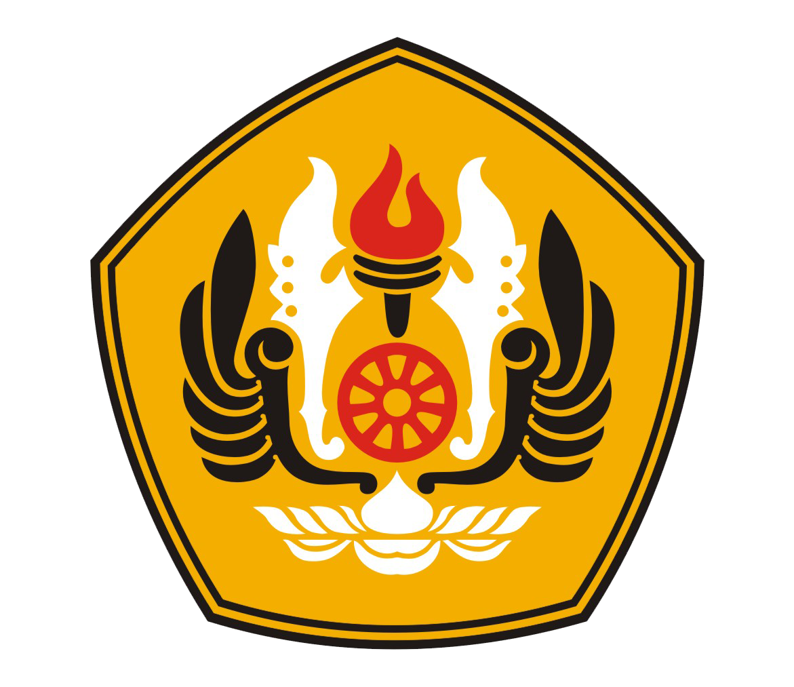

Ketika saya lulus dari SMAIT YAPIDH, saya ingin melanjutkan pendidikan saya menuju perkuliahan. Ada dua universitas yang menjadi tujuan saya, yaitu Universitas Gadjah Mada di Yogyakarta atau Universitas Padjajaran di Bandung.
Saya juga memiliki keinginan untuk memiliki karier menjadi seorang pegawai di dalam Badan Usaha Milik Negara (BUMN).
Cita-cita terbesar saya ialah untuk membuat orang tua saya bangga saat melihat diri saya yang suka membuat masalah ini sukses di masa depan.
Ammiin...